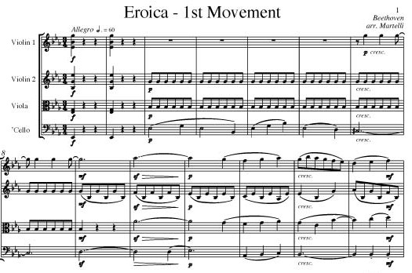
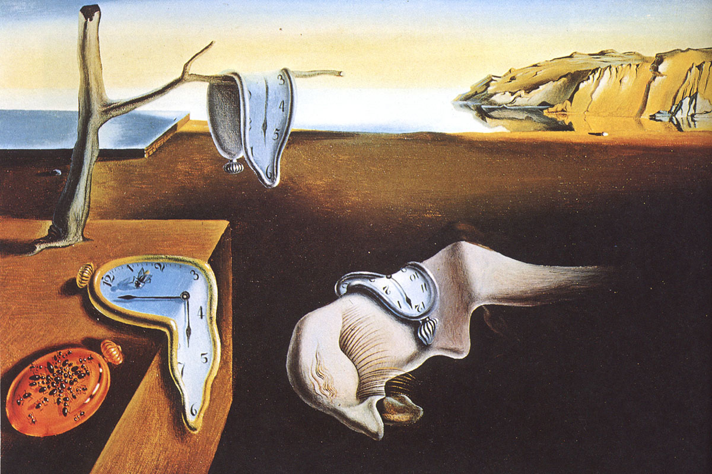

Art, Its Value, And How We See Ourselves
Guest article by John Shand
1.
What I wish to do is to look at the value of art in the wide human cultural context, most fundamentally indeed as part of the human condition. By the human condition is meant the essential features of what it is to live a life as a human person.
Whatever value we derive from experiencing art, engaging with it in particular cases, there is something beyond that which points to the value of art as a whole and as such. Art causes particular affects (that is, art causes the experience or feeling of emotion) in us. It may even inspire ideas in us and carry and transmit ideas. However, we can also take a step back and view art as a whole and raise the question of what is the value of it as a whole.
The answer to this, and not the particular effects of art, is, it will be argued, the deep reason we value art so highly. The particular effects might be brought about in some other way, showing that art’s unique value cannot lie there. The deep and enduring essential value of art lies elsewhere and is something we may not notice. We may notice it in a sudden intuition or through deliberate reflection. It will be argued that the essential value of art as such lies in its existence, created as it is by human beings, positioning us in a special way in relation to the universe.

In art, we can see ourselves as standing above the brutality of our mere existence and non-existence. It reaches beyond and above us as mere fleeting existences. We can do this even when aware of this terrible transitoriness, and the subject of the art is that very brutality. Transcending and yet stating, as Samuel Becket does, that: ‘They give birth astride a grave, the light gleams an instant, then it’s night once more.'1 Beckett’s line is an example of what is meant. It both confronts and transcends in that very confronting. Through art, we have the ability to create things that no other creatures can. When we listen to a great piece of music or stand before a great painting, whatever the particular subject or thought behind the work, we may find ourselves realising, perhaps saying, in a shocked yet exalted and profound way: ‘Only human beings can do this’. Moreover, we do these things with incredible bravery, since we do them in the face of the full horror of awareness of our blink-of-an-eye transitory existence as individuals, and yet we are still able not to be overcome by such thoughts and can do something with them to create art. In so doing, we raise ourselves up beyond being mere animals who have no more than to be born, survive, and die, unaware of where they stand in the landscape as we are, but are mere figures in the landscape.
The value we place on art in this way is partly seeing it as courage beyond measure that reaches out to create something wonderful despite the awful awareness of our bleak momentary and insignificant position in the universe, which is without sense or help for pain.2 The value we place on art resists external subversion by contingent cultural circumstance or time because the value of art lies in what it is in itself purely in relation to what it is to be human. In cases of the greatest artworks, we are truly staggered and in awed amazement that they are possible at all, that they can have been brought into existence by one of us, one of us humans. In that human commonality, we may share in its achievement.
2.
One might counter the claim that art is unique with respect to how it is valued as the embodiment of our ability to raise ourselves above the merely existential.
There are three possible candidates here. Religion, Science, Ethics. It may be said that through these we aim to cast ourselves and our place in the universe as something beyond what can be accomplished by any other living creature.

3.
Religion. It might be supposed that religion also possesses the characteristic of reaching beyond and above our mere existential condition, and so placing us in the universe as something other than our brute existence and then, of course, non-existence. It may even give us grounds that we may not cease to exist on death, its sting being taken.
And it is true that religion presents itself in these ways. But that vision of our place in the scheme of things is not something that can be shared by everyone. For non-believers in the theistic God and His order, religion has no force. Art, however, is more fundamental. Whereas the irreligious cannot share or enter into the place set out for us by religion, the religious can share and enter into that which art speaks of, and what it shows about humans and their condition.
What proves this further is that even art inspired by religion – as it will be pointed out by the religious, there is much of – can also be appreciated and speak of the same things as any other art even when we are not religious. It is art that is more universal, and in being universal it merely adds to the argument that it is the most fundamental way we have of showing that human beings, and only human beings, can be aware of their place in the universe, with all the fear and horror that this brings with it, as well as its joys and wondrousness, and yet create these miraculous artistic constructions that delight and console almost anyone who is prepared to pay them attention.

Seemingly intractable paradoxes involved in speaking of the ineffable are based on a mistake.
4.
Science. It may also be pointed out that surely in science we transcend ourselves. For is it not science that tells us truly what our place is in the universe? Some seem to get great delight from the merely factual contemplation of the universe, shown in all its wonder.
But given the place that science accords us in the universe, the question then appears as to what we are to do with such facts. For on their own, the facts are dead and empty as to the human condition. The factual account presented is in itself a dark and meaningless possession, bereft of the values that give life, colour, and differential signification to the world, as only humans have the capacity for in such a heightened form.
Then there is the actual picture that the factual account gives. We exist among billions upon billions of stars and galaxies, with intuitively impossible-to-comprehend distances, the events taking place over an unthinkably long timespan, in all of which we register not at all essentially, and we began and will be gone in a length of time laughably short from the perspective of the cosmos.
Here again, art is able to articulate the lived reality of those facts, and the normative implication of them as to how we should live our lives, as those situating time-governed facts shine starkly to render graphically the human condition. We might take a consoling deistic stance; but yet again this cannot be shared by everyone, unlike art, and it is in any case a vague uncertain thin gruel to set as a background sustenance to live one’s life by. Compared to the richness of art it is.
And if it is the beauty of the universe that strikes us most through the scientific contemplation of the universe, then we are back with art, with aesthetic considerations, which are open only to human beings. Or they are at the level of complexity and depth of content that art exemplifies. It might be countered that in the mere fact of scientific understanding and knowledge, not the understanding and knowledge itself, we set ourselves outside and higher than ourselves, taking a view at least as far as it can be from nowhere, that is timeless, a view sub specie aeternitatis, where we strive for a God’s-eye view. There is truth in that, though its possibility is not uncontentious as there are those who cast doubt that a perspectiveless, an ‘objective conception’ view, is possible.3 But again, even if possible, and the wonder at us being able to take up such a stance, what are we to do with it as a feature of our lives? Art allows us to do something with this thought and what it means. Art may encompass its possibility by making it part of something we can live and feel, rather than it being a mere abstract claim.

Salvador Dali, The Persistence of Memory (1931).
5.
Ethics. It is often stated that it is in our moral behaviour, or ability to live ethically, that we set ourselves above the animals, as not mere animals, as not acting and being able to choose not to act like animals. We are able to act normatively. By which is meant we can follow, and not just act in accordance with a rule, by comprehending and choosing, or not, to follow rules, thereby making us responsible for significant parts of our lives. The first thing to point out is that morality cannot encompass a whole life as its meaning. Part of it, yes, but there are other considerations in play when considering the human condition and our place in the universe. Morality is in that sense narrow.
Nor is it something that is universally shared as a central concern in life. Some people have other matters than morality at the centre of the way they view their lives and aim to live them. Add to this the doubt both about the nature and real existence of morality – at least it may be said that doubt is rife, as are disputes within morality. One might say that like art we can find the morality that suits us.
But one might argue that it is art that allows us more scope to explore how we view our place in the world. The fact of morality, of there being values which might be applied to people’s character and actions, might indeed indicate that we can transcend ourselves, but its content has little reflective to say about that transcending. Whereas art does. Art not only transcends the mundanity of our existence, it says through itself that we do, and then goes further and reflects on what that means, and in so doing gives it body and flavour. Art involves values, and ethics is only a subset of the human capacity to value, and the reflection that we are essential to there being values at all. No valuers, no values. Values are at the heart of art, for within artworks the consideration of whether one should do this or do that is constant, and our being able to value is what gives us the idea that human beings go beyond being merely an existential fact. In the very expression of that in art, we find something that is universal that all can share, that gives meaning and substance to life. Perhaps this is some of what we mean by ‘genius’. Those human beings capable of bringing these kinds of artworks into being.
Your ad-blocker ate the form? Just click here to subscribe!
6.
A notable feature of art that allows us through it to be free of the temporal mundanity of our mere existential presence, here today, gone tomorrow, is the timelessness of art.
This will raise hackles among those who think that art cannot be independent of its social and historical surroundings. They are however wrong and misunderstand. Of course, in respect to what art is produced, it will be influenced by the mores of the day or period, but arguably this does not affect its value. This is partly because art has internal standards and internal logic independent of historical circumstances – so an artist of a later period is able to look back and admire an earlier artist, thinking they are just as good as themselves. Art is similar to philosophy, perhaps uniquely so. As in philosophy, it makes no sense to say that Wittgenstein was a better philosopher than Plato, or vice versa, nor similarly that Stravinsky is a better composer than Bach, or vice versa.
This applies in art, but not, say, in science – that activity is progressive – people do not think chemistry textbooks from hundreds of years ago are as good as those now.4 Art thereby can take us up to something out of time, and for a while give us the impression that we also transcend time, and in so doing provide something for us that is not subject to our constant subjection to it; for it might be argued that time is humankind’s greatest enemy, for it is being in time that marks us as having a puny existence swimming in a vast boundless temporal medium over which we have no control.

The limits of language are all there before us in the everyday. For there is no description or account of the wind on your face (nor of the experience of seeing a red rose) that could give you any idea at all what the wind on your face was like to have.
7.
To emphasize the point about the universal and ineradicable nature of art as something that shows us that human beings may take and see themselves beyond considerations of their mere existence, it is worth noting the following.
Art has the merit, perhaps like nothing else – though philosophy alone may make the same claim – of saying of itself, moreover showing, what human beings can do even when they confront the worst, and thereby redeem the worst to some extent. Even when art portrays, expresses, and speaks of nihilism – that there are no values, that meaning is illusory – art, to the extent that it is possible, subverts that nihilism by the very value we may give to the marvel of the way that nihilism is spoken of in the art.5
It allows us to stare into the abyss, and rather than become overwhelmed by a turmoil of inchoate uncontrolled mental despair, art shows by its very dealings with it that we can yet do something with this confrontation. That we do not need to create artworks in any mundane practical sense precisely marks their value as something beyond ourselves as drudging transient animals.
Art, again like nothing else except perhaps philosophy, never fully subverts itself, as it always finds somewhere to stand in order to have a base from which to carry on doing, creating, what it does. In this way, humans find a bastion which remains, whatever circumstance and doubt subvert other human activities, driving those activities into pointlessness, and in so doing, in art, even in their worst thoughts, humans can reach beyond themselves, beyond the brutal grind of mere existence and non-existence, to create value and give themselves value by reflection on and from art.
◊ ◊ ◊

Dr John Shand is a Visiting Fellow in Philosophy at the Open University. He studied philosophy at the University of Manchester and King’s College, University of Cambridge. He has taught at Cambridge, Manchester and the Open University. The author of numerous articles, reviews, and edited books, his own books include, Arguing Well (London: Routledge, 2000) and Philosophy and Philosophers: An Introduction to Western Philosophy, 2nd edition (London: Routledge, 2014).
Contact information:
- Dr John Shand, The Open University, Walton Hall, Milton Keynes, Buckinghamshire, MK7 6AA, United Kingdom.
- https://open.academia.edu/JohnShand
- http://fass.open.ac.uk/philosophy/people
John Shand on Daily Philosophy:
Photo by Tengyart on Unsplash.
-
Samuel Beckett, Waiting for Godot. (1953) ↩︎
-
See Matthew Arnold, Dover Beach (1867) and Bertrand Russell, A Free Man’s Worship (1903). ↩︎
-
Such an objective conception may be found in the ideas of Descartes. For the best discussion see, Bernard Williams, Descartes: The Project of Pure Inquiry (London: Penguin, 1978). See also Thomas Nagel, The View from Nowhere (Oxford, Oxford University Press, 1986) and the existentialist writers, starting with Nietzsche, and on through Heidegger, Sartre, and Merleau-Ponty, who dispute the possibility of a perspectiveless view. See John Shand, ‘Limits, Perspectives, and Thought’, Philosophy, July 2009, Vol. 84, Issue 3. ↩︎
-
See John Shand, ‘Philosophy makes no progress, so what is the point of it?’, Metaphilosophy, Vol. 48, No. 3, April 2017. ↩︎
-
Cf Vaughan-Williams, the slow finale of the Symphony No.6. Deryck Cooke identifies this slow pianissimo finale as ending literally in niente, nothingness…‘an ultimate nihilism’. Deryck Cooke, The Language of Music (Oxford, Oxford University Press, 1989, first pub 1959), p. 253. One may argue that Sibelus, Symphony No.7 stands as a defiance against the brutality and meaningless of life, and that in Mahler, Symphony No. 9, a whole human life is laid out before you with all that that involves. David Holbrook, Gustav Mahler and the Courage to Be (London: Vision Press, 1975) and more generally on the idea being captured in music see, John Shand ‘Ideas in Music’, in Revista Portuguesa de Filosofia, Vol.74. No.4, January 2019. ↩︎